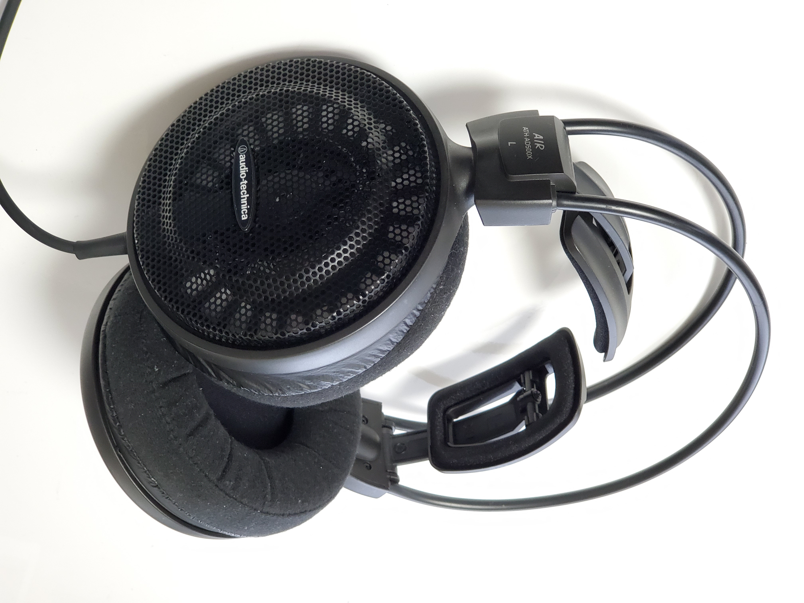
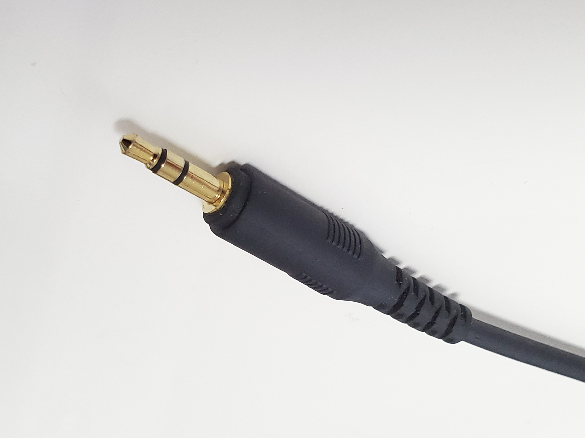
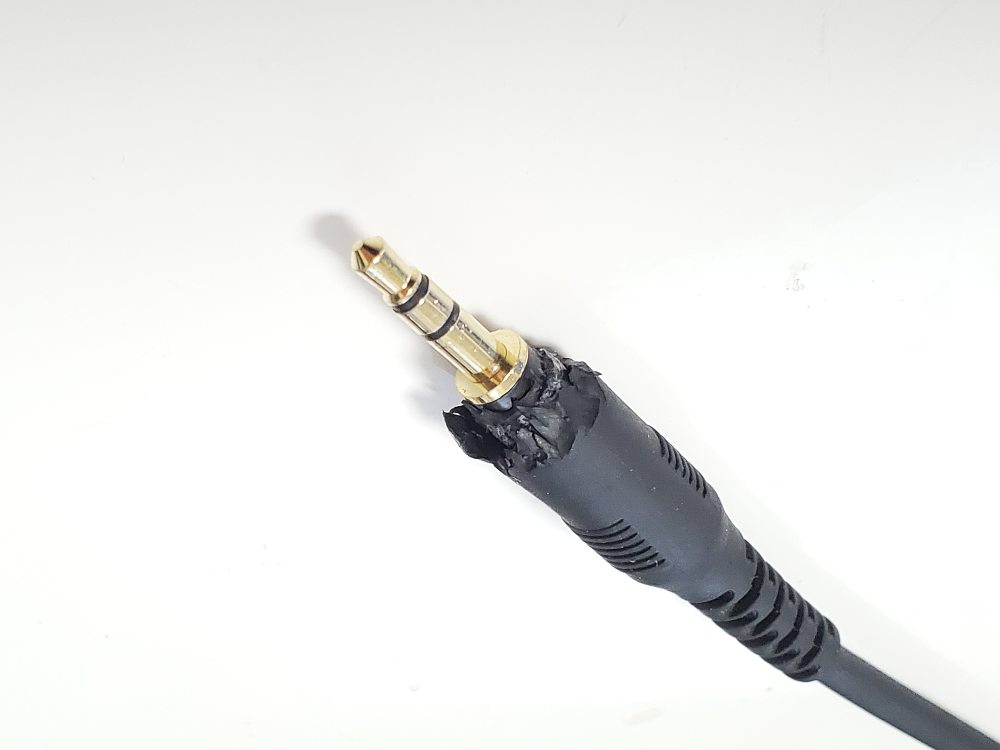
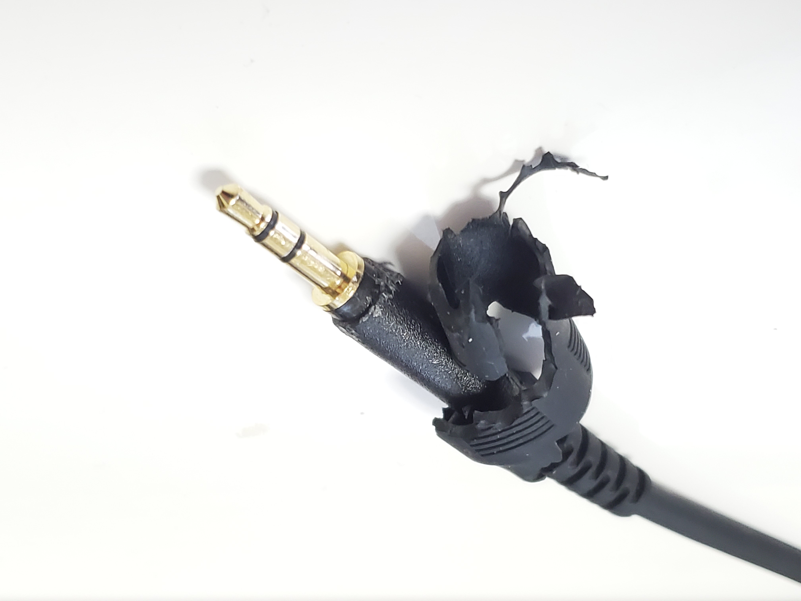
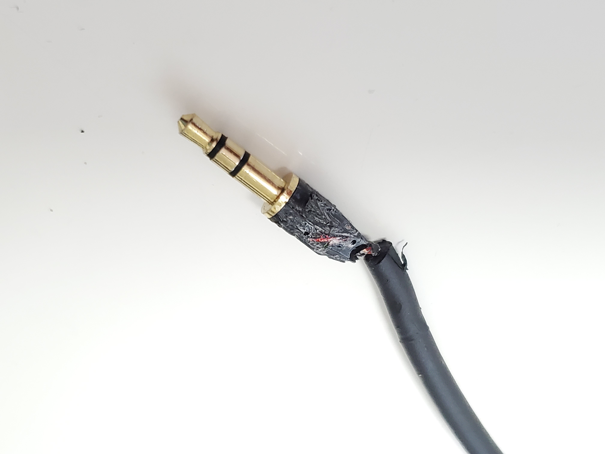
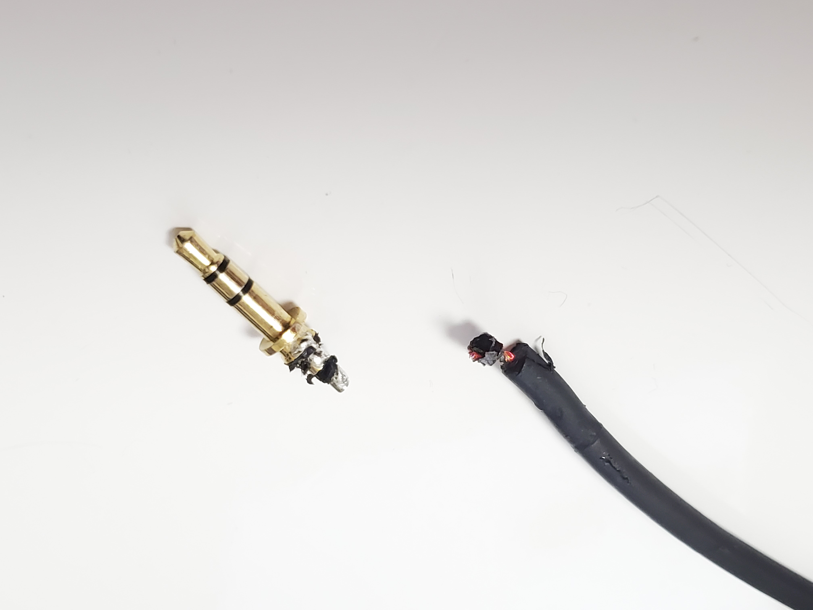
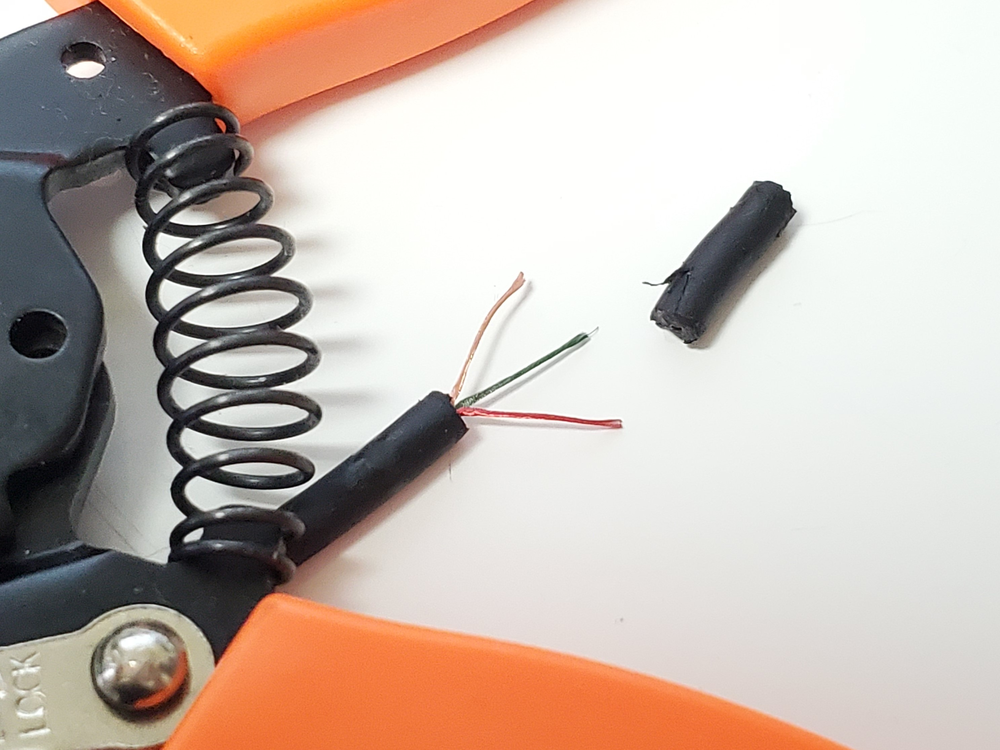

使用しているヘッドホン
ヘッドホンはATH-AD500X(audio-technica)を1年以上使っている。

オープンエアー型でずっとつけてても疲れないしすごく気に入っていたけど、先日突然音の聴こえ方がおかしくなり、ヘッドホンアンプの接触不良を疑ったが、ヘッドホンの3.5mmプラグが接触不良を起こしていることが判明した。

audio-technicaはサポートが充実していてこのヘッドホンはイヤパッド・ウィングサポート・ドライバユニット・コードの交換まで修理のサービスがあるらしいが有料でコード交換は3500円かかるとのこと。このくらいなら自分で直せるのではないかと考え、ついでに3.5mmプラグを6.3mm標準プラグに変更してしまうことにした。
まずどこが断線してるのか見たいので皮膜を破る。
 
コードは樹脂の中に埋め込まれていたので、断線の場所を特定することができなかった…。まあいいや
 
コードの先端を剥いて、注文したTRSフォンプラグが届くのを待つ。ヘッドホンの線はブロンズがGND、赤がRチャンネル、緑or青がLチャンネルらしい。

To Be continued...